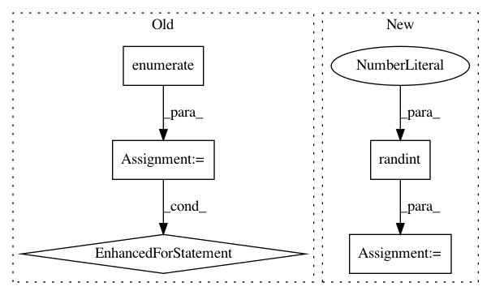

59ec6660464bd378b20d4ae200c7614133a9a38b,pyntcloud/samplers/points.py,FarthestPointsSampler,compute,#FarthestPointsSampler#,54
Before Change
random.randint(0, len(remaining_points) - 1)))
for _ in range(self.n - 1):
distances = [self.cal_distance(p, solution_set[0]) for p in remaining_points]
for i, p in enumerate(remaining_points):
for j, s in enumerate(solution_set):
distances[i] = min(distances[i], self.cal_distance(p, s))
solution_set.append(remaining_points.pop(distances.index(max(distances))))
return pd.DataFrame(solution_set)
After Change
remaining_points = self.points.values
// the sampled points set as the return
select_idx = np.random.randint(low=0, high=len(self.points))
// to remain the shape as (1, n) instead of (n, )
solution_set = remaining_points[select_idx: select_idx+1]
remaining_points = np.delete(remaining_points, select_idx)
for _ in range(self.n - 1):
distance_sum = self.cal_distance(remaining_points, solution_set)
select_idx = np.argmax(distance_sum)
solution_set = np.concatenate([solution_set, remaining_points[select_idx:select_idx+1]], axis=0)
remaining_points = np.delete(remaining_points, select_idx)
return pd.DataFrame(solution_set, columns=self.points.columns)
In pattern: SUPERPATTERN
Frequency: 4
Non-data size: 5
Instances
Project Name: daavoo/pyntcloud
Commit Name: 59ec6660464bd378b20d4ae200c7614133a9a38b
Time: 2019-08-26
Author: hc.wang96@gmail.com
File Name: pyntcloud/samplers/points.py
Class Name: FarthestPointsSampler
Method Name: compute
Project Name: jhfjhfj1/autokeras
Commit Name: bf1337afb8d75f0bbd8725c14830b8798bceb33e
Time: 2018-01-02
Author: jhfjhfj1@gmail.com
File Name: autokeras/net_transformer.py
Class Name:
Method Name: transform
Project Name: nl8590687/ASRT_SpeechRecognition
Commit Name: c621c0aeb96002bfc53e98eaad07af29532e1c55
Time: 2017-09-07
Author: 3210346136@qq.com
File Name: readdata.py
Class Name: DataSpeech
Method Name: data_genetator